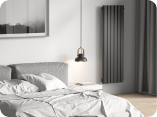

<section class="about">
    <div class="container">
        <div class="about__body">
            <div class="about__body-start">
                <h2 class="about__body-start-title">
                    Подробнее о нашей
                    <br>компании
                </h2>
                
                <div class="about__item">
                    <span>10 лет</span>
                    <p>на рынке производства радиаторов</p>
                </div>
            </div>
            <div class="about__body-end">
                <div class="about__body-end-desc">
                    <p>Компания Radiator Design — российский производитель трубчатых радиаторов и полотенцесушителей (водяное и электрическое подключение) из специализированной стали. Большое разнообразие дизайнерских радиаторов.</p>
                    <p>Мы одни из немногих, кто разрабатывает и выпускает новые эксклюзивные модели, которые в России никто не производит. Ориентируясь на европейское качество, мы стараемся сделать нашу продукцию лучше.</p>
                    <p>Наши радиаторы имеют обязательную сертификацию и соответствуют требованиям ГОСТ 31311-2005. Толщина металла 3 мм, поэтому срок службы наших радиаторов более 30 лет. За 15 лет работы, шаг за шагом, мы оптимизируем наше производство и стараемся на этом не останавливаться.</p>
                </div>
                <div class="about__body-end-box">
                    <div class="about__item">
                        <span>>1000</span>
                        <p>радиаторов изготовили для наших клиентов</p>
                    </div>
                    <div class="about__item">
                        <span>>50</span>
                        <p>сотрудников создают красивые радиаторы</p>
                    </div>
                </div>
            </div>
        </div>
    </div>
</section>